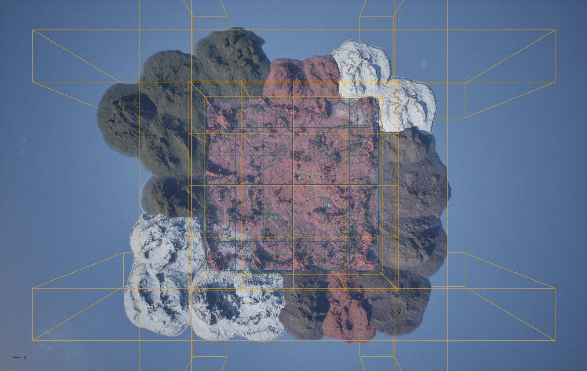
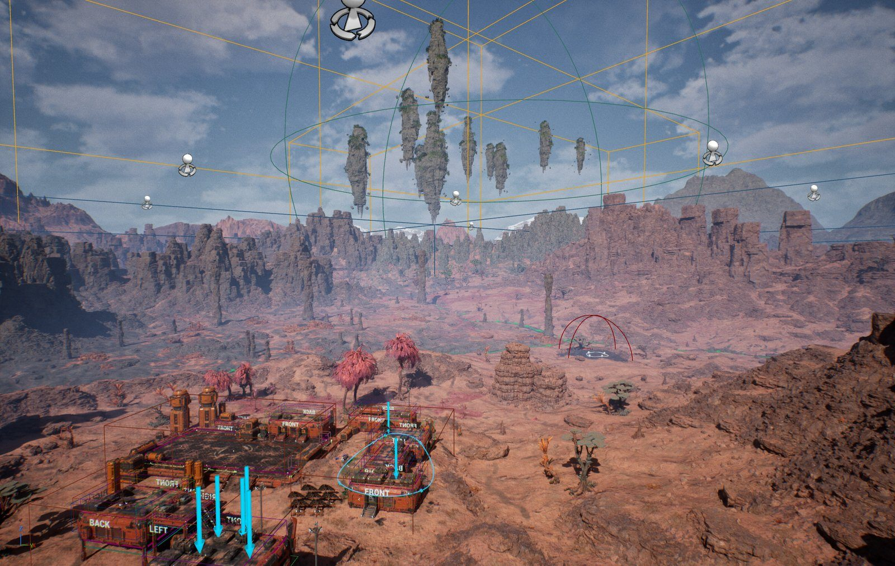
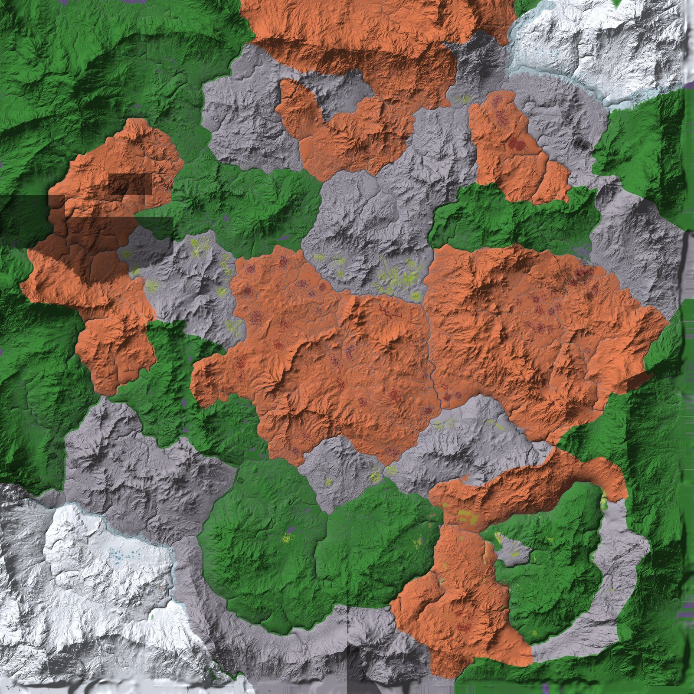

World and map
The main map: an island 46 km long, rebuilt from the bundle's example level, region by region.
Doing The main map is being rebuilt from the Sci-Fi bundle's example level (D-34): an
island 45.9 km from south to north and 22.4 km wide, 714 km² of land with sea all
around, a landscape at 1 m everywhere with Nanite, regions that blend into each other instead of meeting at hard edges,
open ground for the hoverbike and buggy, and the arctic in the north-west. This tab is the Map chat's: the plan, how it
is built, the pictures, the questions for the owner and the to-do list. The full plan is the design record's
docs/map-design.md.
Pictures







Questions for the owner
| # | Question | Proposal |
|---|---|---|
| Q1 (OQ-23) | On foot the 45 km take about 2.5 hours, not the hour asked for (running is 5 m/s; an hour would need 12.7 m/s). Keep it, or make running faster, or add fast travel? | Keep running as it is; travel on foot is for exploring, vehicles for crossing; fast travel between discovered outposts later |
| Q2 (OQ-24) | The 15 zones of D-27 were 2.56 km squares. On the new map each would be about 50 km². Keep 15 big zones, or more zones? | Keep the 15 zones and their levels, redrawn to follow the regions (a zone is a region's part); propose a picture before changing the data |
| Q3 | The vehicles' speeds: tune them so the crossing is 35 minutes on the corridors? | Measure the hoverbike and buggy on the corridors once the map is built, then set their top speeds |
To do
- In the build Measure the example level; export its terrain (1 m heights, 10 paint layers)
- In the build Editor tools: landscape export, Nanite with skirts, Nanite build, landscape delete, World Partition settings copy, HLOD layer on new landscapes; their tests
- In the build Terrain tool v3: layout
- To do Terrain tool v3: macro heights, erosion, water
- To do Terrain tool v3: the 1 m tiles and their paint
- To do Scrap the old
L_Main; build the new level, then the tiles, one at a time - To do Rivers and lakes
- To do Dress one region first (pictures for the owner), then the rest
- To do Floating islands over the lagoon
- To do HLODs; the budget measured with the editor closed
- To do Zones and starting locations laid out again (Q2), the zone data and tests
- To do Harvesting (M5)
- To do The wiki's world and map tab: merged, with these questions and this list
Progress
| Step | What | State |
|---|---|---|
| M1 | Plan; the example level measured and exported; the size settled with the owner | In the build 2026-10-19 (this page) |
| M2 | Terrain tool v3 (main_map_terrain.py): layout, macro, tiles | the layout done |
| M3 | L_Main v2: the level, the 1 m landscape tiles, the sea, rivers and lakes | Designed |
| M4 | Dressing with the bundle's biome presets; floating islands; HLODs | Designed |
| M5 | Harvesting | Designed |
| M6 | Places (crash sites, ruins, the dungeon mouth, zones and starts laid out again) | Designed |
| M7 | Look: per-region fog and light, sound beds | Designed |
| M8 | Budget and checks | Designed |
Size and travel
| Number | How | |
|---|---|---|
| South to north | 45.9 km of land (46.0 km box) | The vehicles decide (the owner's choice): 35 minutes at about 22 m/s (79 km/h) average. The bundle's hoverbike boosts to 35 m/s and the buggy to 55 m/s (their Blueprints' MaxSpeedLimit, against the forward speed in cm/s) |
| On foot | About 2.5 hours south to north | At the run speed of 5 m/s (D-19); the 1 hour asked for would need 12.7 m/s, so it is not kept: an open question (Q1) |
| West to east | 22.4 km at the widest | |
| Land | 714 km² (D-26's 100 km² was for a 10 km map) | 6 × 12 landscape tiles of 4.06 km cover 24.4 × 48.8 km; tiles that are all deep sea are left out |
The layout
North is up; the regions get harder toward the north.
Driving corridors: six lines of gentle ground (relief cut to 15 %, no lakes) from the south coast to the north, into the desert, the karst, the lagoon, the delta and the south-east coast, about 1.2 km wide. Besides them the plains, the tundra, the dune seas' edges and the arctic's valley floors are open driving ground.
| Region | Where | Landforms | Ground (the bundle's layers) |
|---|---|---|---|
| Jungle (Fungal Forest) | The south | Rolling hills cut by river valleys, the example's relief at 42 % | Jungle; jungle swamp in wet valleys |
| Swamp (Coastal delta) | The south-west | A flat river delta, low islands | Jungle swamp; jungle on firmer ground |
| Coast | All round | Beaches; rocky coasts in the karst and the arctic | The shore layer of the region (jungle, desert or arctic shore) |
| Plains | The middle | Long low swells for driving, lone rocky hills (inselbergs) | Desert grass (red savanna); jungle along the rivers; moon rock on the hills |
| Desert (Crystalline Desert) | The middle east | Canyonland from the example's relief, dune seas in the low parts, a crater (Skitterjaw Hollow) | Desert sand; grey moon patches; desert grass where wetter; acid round the pools |
| Plateau (High-Gravity Plateau) | East of the north middle | A mesa 190 m above its surroundings, ragged edge, 11 canyons into it, stepped cliffs | Moon sand on top; columnar rock (Tharrn's preset) on the cliffs |
| Karst (Subterranean Caverns) | The west | Fluted rock towers in clusters, a few giants, sinkholes | Green floors (jungle), moon rock, columnar towers |
| Tundra | North of the plains | Broad rolls, kettle lakes | Arctic swamp (tundra); snow on north-facing slopes; moon rock on ridges |
| Arctic | The north-west (the owner) | A mountain range with peaks near 900 m, U-shaped valleys, three fjords | Snow; bare rock on cliffs; arctic swamp on low valley floors; arctic shore |
| Badlands | The north middle | Grey eroded hills, old craters | Moon sand with red desert patches, acid pools |
| Lagoon (Floating Archipelagos) | The north-east | A lagoon inside a ring of reef land, open to the east; floating islands above | Jungle, shore |
Biome transitions
The example level's biomes meet at hard edges. The new map blends them the way vegetation does:
- Every region has seed points; a point's regions are weighted by its distance to them through a warped space, so a border wanders and fades over about a kilometre.
- The paint picks one region at each point: each region's weight plus its own patch noise (420, 160, 48 and 14 m); the strongest wins. Across a border the patches of both regions interleave, thinning out with distance, from stands hundreds of metres across to single clumps.
- The land moves the paint further: gallery forest along rivers into the plains, swamp in wet hollows, acid round the desert's pools, beaches and river banks in the shore layer of the region around them, snow above a snowline that falls toward the north and lies lower on north-facing slopes, bare rock where it is too steep for snow.
- Heights blend over the same distance, so landforms change gradually too.
- Each point gets one layer (the presets need 0.9 or more to grow), softened over a metre or two for the material.
What it takes from the bundle's example level
Measured 2026-10-19 (ExampleLevel_Bundled, exported with ExportLandscape):
| The example level | Measured | In the new map |
|---|---|---|
| Landscape | 4 × 4 km at 1 m, Nanite on, the combined material, 10 paint layers, up to 7 in one component | 1 m everywhere (6 × 12 tiles of 16 × 16 components), Nanite on, the same material; up to 6 layers a component |
| Relief | -18 to 309 m; steep eroded ground: half of it steeper than 26°, a third steeper than 35°; fine gullies at 1 m | Its eroded relief (high-passed at 350 m) is laid over every region in 2 km cells, each turned and mirrored its own way, as much as each region takes (all of it in the desert canyonlands and badlands, little on the plains) |
| Paint | Large single-layer patches (orange desert, grey moon, green jungle, white snow) with hard edges | Patches that interleave across about a kilometre at every region border (section 4) |
| Biome volumes | 36, each 670 m square, every one listing all nine presets (desert, desert grass, acid, moon, jungle, jungle swamp, arctic snow, shore, swamp), the paint choosing | One a kilometre square; each lists the presets painted in it, with Tharrn's shore and columnar presets too; each has its own lowest point (section 6) |
| World Partition | Its own streaming grids, default HLOD layer HLODLayer_Instanced, HLOD layers per kind (landscape, foliage, buildings) | Copied whole (CopyWorldPartitionSettings); landscape tiles on HLOD_Landscape, biome volumes on HLOD_Foliage |
| Sky | The environment controller with its sun, sky light, atmosphere, clouds, fog, post-process, two planets, a moon, the space sphere | Copied with every setting; Tharrn's clock drives it (P6.7) |
| Floating islands | 7 sets | Over the north-east lagoon (the Floating Archipelagos) |
| Distant mountains | 20 meshes round the edge, as a backdrop | Not needed: the sea is all round |
| Colonies (3 outposts) | Buildings, props, lights | Not placed (the owner) |
How it is built
| Part | Set-up |
|---|---|
| Level | /Game/Tharrn/Maps/L_Main, World Partition, the example level's streaming settings |
| Landscape | 6 × 12 tiles of 4,064 m (16 × 16 components of 254 quads, 2 × 2 sections of 127) at 1 m, one landscape each, edges shared exactly; Nanite on with a 50 cm skirt where tiles meet; streaming proxies of 2 × 2 components; on HLOD_Landscape; both runtime virtual textures (adaptive, about 5 cm a texel over the map) |
| Heights | -84 to about 900 m, one Z scale for every tile |
| Size on disk | About 1.15 GB a tile with its Nanite meshes (the example level's rate), so about 60 GB for the landscape; the saved rocks and trees about 100 MB a km² (the example level's rate) |
| Sea | One plane of the bundle's water, 75 km across (Unreal's ocean draws nothing at this size, gotcha 106) |
| Dressing | The bundle's biome volumes, a kilometre square, generated one at a time: rocks and trees saved with the level, bushes and debris at run time (Tharrn's network-safe copies, gotcha 95) |
| Streaming | World Partition cells and HLODs for landscape, foliage and the rest, built from the command line |
| Budget | 16.6 ms a frame at 1440p on the target tier (D-11) with DLSS; measured with the editor closed |
The editor builds and edits the map a tile at a time (all of it at once would need far more than the PC's 64 GB).
- layout (32 m): the coast (an outline, ragged by noise, three fjords, bays, islets, the lagoon), the regions' weights, the corridors.
- macro (8 m, 3,049 × 6,097 points): each region's landforms, the example level's relief, the corridors cut gentle, the coast and seabed, raindrop and slope erosion, lakes where they belong (tundra kettles, arctic tarns, karst sinkholes, jungle lakes, the desert's acid pools), rivers and streams traced to the sea.
- tiles (1 m): the macro heights refined with the example level's finer relief and rough ground, the rivers cut at 1 m, the paint (section 4); each tile's height and paint files, and its biome volumes with their presets and lowest points. The lowest point is the local valley floor: the presets thin their plants and grow their rocks with height above it (jungle trees thin to 10 % at 100 m above it, desert cliffs and mesas grow up to three times larger toward 160 to 200 m).
Tools/World/main_map_terrain.py (game repo):
Tools/World/build_main_map.py: scrap (the old level and its leftover files), level (World Partition settings, sky, clock, sea, virtual textures), landscape (the tiles, one at a time), water (river splines, lakes), dress (the biome volumes), pictures.
New editor tools in C++ (TharrnWorldBuildToolset, tested in Tharrn.Editor.WorldBuild): ExportLandscape, SetLandscapeNanite, BuildLandscapeNanite, DeleteLandscape, CopyWorldPartitionSettings, and an HLOD layer on CreateLandscape.
Where you can start
Designed You pick where to start: one or two starting locations in each region, by the difficulty you want (D-28). The convoy's crash scattered its survivors across the island, so each start is a crash site.
Open question The starts below are still placed on the first island's layout; they are laid out again on the new map (to do).
| Start | Difficulty | Level | Region | Zone | What it is like |
|---|---|---|---|---|---|
S01 Coastal Outpost beach | Easy | 1 | Coastal | Z001 Coastal Outpost | Beside the starter hub (vendors and mission board); the tutorial's crash site |
S02 Apex Migration coast | Hard | 25 | Coastal | Z015 Apex Migration Path | West beach on the apex migration route (world events) |
S03 Fungal Fringe | Easy | 5 | Fungal Forest | Z003 Fungal Fringe | Bioluminescent forest by the south coast; spore hazards |
S04 Lumivine Grove | Medium | 10 | Fungal Forest | Z005 Lumivine Grove | Near the Lumivine Colossus spawn points |
S05 Scavenger Flats | Medium | 6 | Crystalline Desert | Z012 Scavenger Flats | Player trading posts; the desert's only zone without PvP |
S06 Remnant Research Hub | Medium | 12 | High-Gravity Plateau | Z011 Remnant Research Hub | Faction hub with tech vendors on top of the mesa |
S07 High Gravity Plateau | Hard | 22 | High-Gravity Plateau | Z007 High Gravity Plateau | Movement penalties; heavy fauna |
S08 Subterranean Mouth | Hard | 15 | Subterranean Caverns | Z008 Subterranean Mouth | Dungeon entrance; oxygen limits |
Zones
Open question The zone data is still the first island's grid of 15 zones of 2.56 km (D-27); on the new map each zone becomes part of a region (OQ-24). Drawn to scale from the zone data, y increasing upward.
- Safe hub
- Open PvE
- Flagged PvP
- Amber buffer
| Type | Zones | Meaning |
|---|---|---|
| Safe hub | 2 | Vendors, mission boards and safe services; no combat between players. |
| Open PvE | 7 | Creatures and resources; players cannot attack each other. |
| Flagged PvP | 5 | Entering flags you for PvP; richer loot, full loot on death. |
| Amber buffer | 1 | A warning belt around a PvP zone; not flagged. |
Every zone
Level is the recommended level. Respawn is how often its resources and creatures come back.
| ID | Zone | Type | Level | Loot | PvP | Respawn | Notes |
|---|---|---|---|---|---|---|---|
Z001 | Coastal Outpost | Safe hub | 1 | Common | — | 10 min | Starter hub with vendors and mission board |
Z002 | Shoreline Flats | Open PvE | 1 | Common | — | 15 min | Low risk for early scavenging |
Z003 | Fungal Fringe | Open PvE | 5 | Uncommon | — | 20 min | Bioluminescent flora; spore hazards |
Z004 | Skitterjaw Hollow | Flagged PvP | 8 | Rare | Flagged 10 s consent · 60 s exit | 30 min | Small PvP hotspot near resource nodes |
Z005 | Lumivine Grove | Open PvE | 10 | Uncommon | — | 40 min | Contains Lumivine Colossus spawn points |
Z006 | Crystal Expanse | Flagged PvP | 18 | Advanced | Flagged 10 s consent · 60 s exit | 1 h | Gravity anomalies; high-tier crystals |
Z007 | High Gravity Plateau | Open PvE | 22 | Advanced | — | 70 min | Movement penalties; heavy fauna |
Z008 | Subterranean Mouth | Open PvE | 15 | Rare | — | 50 min | Dungeon entrance; oxygen limits |
Z009 | Echo Caverns | Flagged PvP | 20 | Advanced | Flagged 10 s consent · 60 s exit | 90 min | Echo Swarm events; dungeon modifiers |
Z010 | Floating Archipelago A | Flagged PvP | 30 | Alien | Flagged 10 s consent · 60 s exit | 2 h | Endgame PvP warzone; aerial traversal |
Z011 | Remnant Research Hub | Safe hub | 12 | Rare | — | — | Faction hub with tech vendors |
Z012 | Scavenger Flats | Open PvE | 6 | Common | — | 15 min | Player trading posts |
Z013 | Contested Ruins | Flagged PvP | 16 | Advanced | Flagged 10 s consent · 60 s exit | 80 min | Large ruin with timed high-value node spawns |
Z014 | Amber Buffer North | Amber buffer | 10 | Uncommon | — | 20 min | Buffer belt around Floating Archipelago |
Z015 | Apex Migration Path | Open PvE | 25 | Rare | — | 3 h | Periodic apex fauna migration; world event |
The biomes
The regions get harder toward the north, and toward the floating islands of the endgame.
| Biome | What it is like | Resources | Threats |
|---|---|---|---|
| Coastal (start) | Wreckage, shallow pools, small fauna | Organic, low-tier minerals | Skitter packs, tidal storms |
| Fungal Forest | Bioluminescent flora, spore clouds | Biotech cores, organic fibre | Spore bloom, Lumivine Colossus |
| Crystalline Desert | Crystal fields, gravity anomalies | Energy crystals, alloy veins | Sand raptors, grav raptors, Skitterjaws |
| High-Gravity Plateau | Heavy fauna, slow movement | Rare alloys | Heavy grazers, territorial titans |
| Subterranean Caverns | Oxygen limits, echo swarms | Alien cores, rare minerals | Echo Swarm, cave collapses |
| Arctic (the north-west) | Snow mountains, fjords, tundra; cold | To design | To design |
| Floating Archipelagos (endgame) | Aerial traversal, PvP warzones | Endgame blueprints | Aerial predators, faction fortresses |
Harvesting
| What | Where | Gives | Tool |
|---|---|---|---|
| Trees: cut down | Jungle, swamp, the plains' gallery forest, desert palms | Wood (and sap, fibre from some) | Hatchet (more with better tools) |
| Rocks: mined | Boulders and outcrops everywhere; ore and crystal rocks in the desert, badlands and on the plateau | Stone; metal ore; crystals | Pickaxe |
| Sticks and stones: picked up | On the ground in every region, most near the starts | Sticks, stones | Hands |
| Plants: harvested | Bushes, ferns, fungi, grasses; arctic shrubs | Fibre; food (berries, fungi, roots) | Hands (a knife gives more) |
How it works (C++, server-authoritative): the trees and rocks the bundle places are instances in the saved PCG cells; plants and debris come from the run-time layer. A harvest system knows which meshes are which resource (a data table), takes hits from tools or a use key, and on the server counts each thing down; when one is used up it hides it on every machine (and for anyone joining later: the server keeps the list, keyed by a stable id from its place and mesh), drops the items, and grows it back after a while. Trees fall over before they go. Tools, items and recipes go into the game's data files (Items.csv, Recipes.csv).